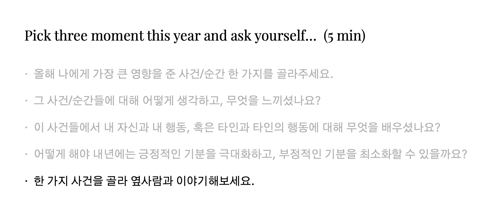

- Check in
- _____ of the year
- History map
- Reflection
Coffee break
- Theme of the next year
- Self development circle
- Check out
- 본 콘텐츠는 이진재님의 글을 웹페이지로 표현한 것입니다.
- Published by Minseop Kim
Reflection

- 올해 나에게 가장 큰 영향을 준 사건/순간 한 가지를 골라주세요.
- 그 사건/순간들에 대해 어떻게 생각하고, 무엇을 느끼셨나요?
- 이 사건들에서 내 자신과 내 행동, 혹은 타인과 타인의 행동에 대해 무엇을 배우셨나요?
- 어떻게 해야 내년에는 긍정적인 기분을 극대화하고, 부정적인 기분을 최소화할 수 있을까요?
- 한 가지 사건을 골라 옆사람과 이야기해보세요.